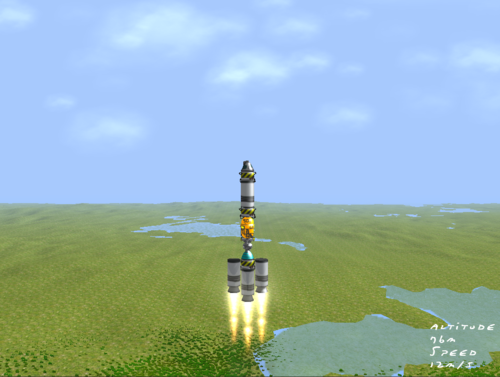
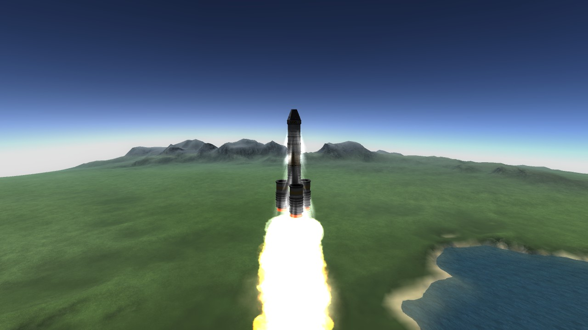
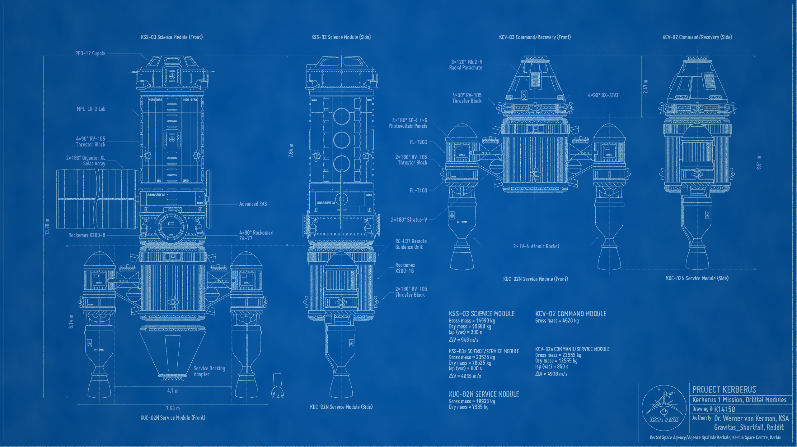

Click the upper section of the screen to go to the previous screen or press the up arrow
Click the upper section of the screen to go to the previous screen or press the up arrow
Click the lower section of the screen to go to the next screen or press the down arrow

|  |  |
|  |